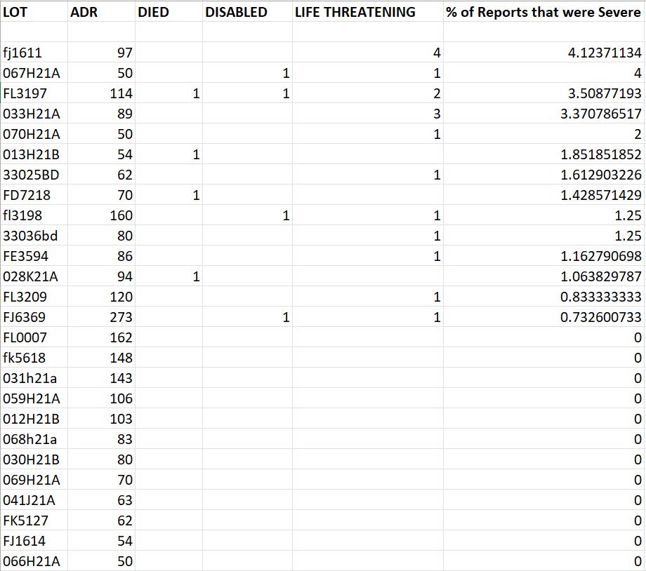

home | Booster Warnings by Month | Moderna | Pfizer | Janssen | Moderna (outside USA) | Pfizer (outside USA) | Janssen (outside USA) | International Deadly Lots | 1st & 2nd Doses | Severe | Lethal | Size Matters | Lot Sizes | Time till onset | Second Peak | Lot Expiry Dates | RNA Degradation | Causality | All or Nothing | Clusters | Symptom | Paralysis | Children | Gender | States | Geography | Japan | Case Reports | Whistle Blowers | EMA Leaks | Video Library | Treatment | Background | Download Source Code | Data Cleaning | Donate
If this site is slow loading that's because over 1 million people are accessing it right now. Please use auxillary site HowBadisMyBatch.com which has been set up to cope with this overload. Thankyou.
Health Warning :
Here are the latest updates from VAERS showing the most recent batches and their association with harm. This page is updated monthly.
DonateBatches distributed in the USA - September 13th 2021 to December 14th 2021
Batches distributed in other countries outside of the USA - September 13th 2021 to December 14th 2021
Batches distributed in other countries outside of the USA - November 1st 2021 to January 17th 2022
January 2022 - USA Vaccinations
VAERS records 5458 adverse reports for this month. Severe reports remain very low in frequency.

Out of 5498 reports in VAERS, there were 9 deaths, 48 life threatening conditions, and 15 disabilities. So the % of reports with severe reactions was 1.3%. See also - Doses
February 16th 2022 - USA Vaccinations
The number of people being vaccinated are lower than ever before - 5240 adverse reports since January 1st. This is less than 10% of the number of reports we had in the same January - February time period last year.

Here is the spreadsheet USA data : Jan 1st to Feb 16th 2022
Whilst 2021 vaccines certainly induced a large number of immediate (acute) injuries and deaths, it seems that the 2022 vaccines are not doing so.
Lower uptake of the vaccines means that pharma has lowered or ceased production of vaccine. Consequently existing vaccine is becoming old and approaching expiry - the mRNA has degraded more, and is less toxic.
A New Government Strategy
If short-term effects are absent, what about long term effects such as those resulting from reduction of the immune system? Such effects would not show up immediately after vaccination. They would only be detectable by carrying out a white cell count, or by observing greater susceptibility to illnesses
If we have leaned anything from 2021, it is that the governments are willing to push harmful substances with no intent to protect us from harms caused. That intent to harm remains unchanged.
So what's coming next ? If Government strategy has changed, Government motives have not.. If acute injury is being phased out - some other form of harm ( e.g.long-term injury) may take its place. There are several hints in the media about a new variant that is similar to HIV, and pharma are already preparing a HIV "vaccine" for mass production. A HIV "variant" would certainly provide a convenient cover for those whose immune systems are already compromised by doses 1 and 2. Conversely, cases of immune compromise would be used to justify the deployment of a HIV vaccine on all - the vaccine itself being the infectious agent.
Contact
covidscienceteam@protonmail.com
Created by Craig Paardekooper ©2021